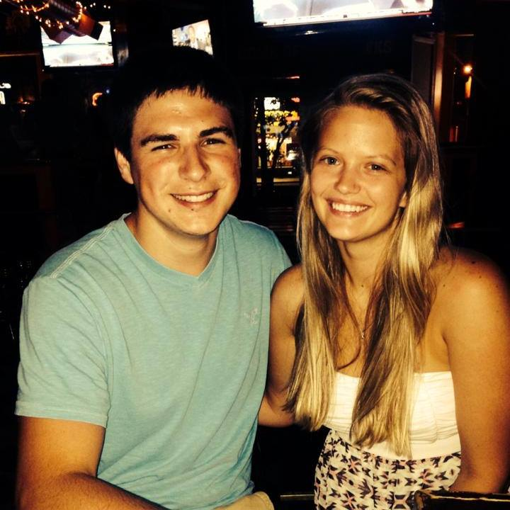
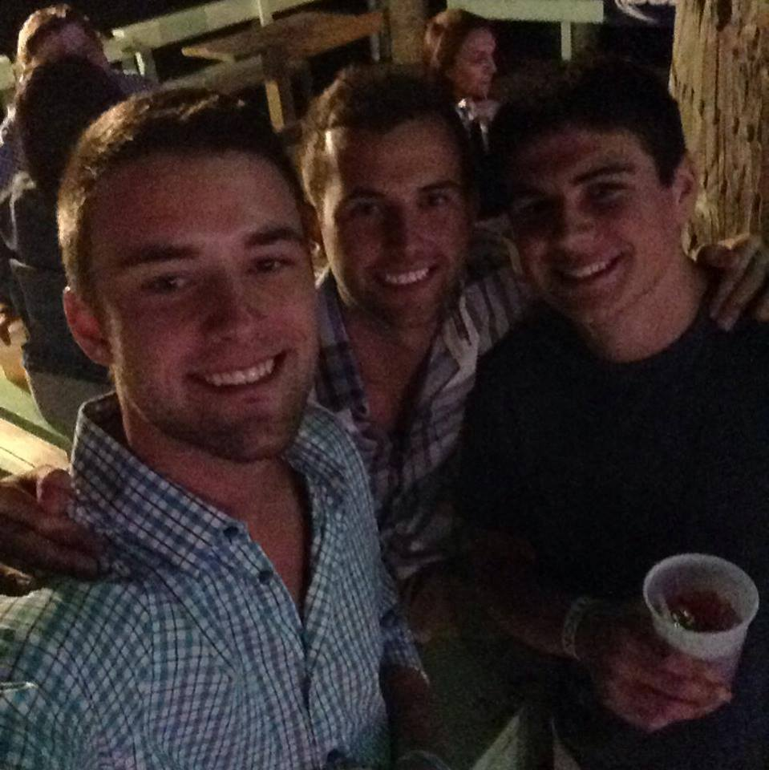

Aric's Page
About Me |
Resume |
||
Pictures |
About AricI was born in Cedar Rapids, IA. I'm a 22 year old, senior Information Systems major with a Computer Science minor at the University of Iowa. Even though I was born in Cedar Rapids, I lived most my life in Center Point, IA, a town about 15 minutes north of Cedar Rapids. I moved there in sixth grade because of my mom getting remarried. Throughout my schooling, sports have been a big part of my life. During school I played baseball, track, golf, football, and basketball, with basketball being my personal favorite. I choose the U of I because I grew up loving hawkeye football and it fit my major coming in (business).
|
||